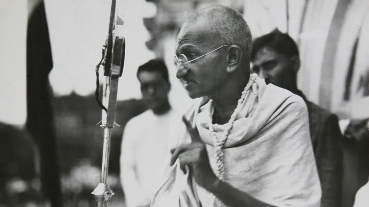
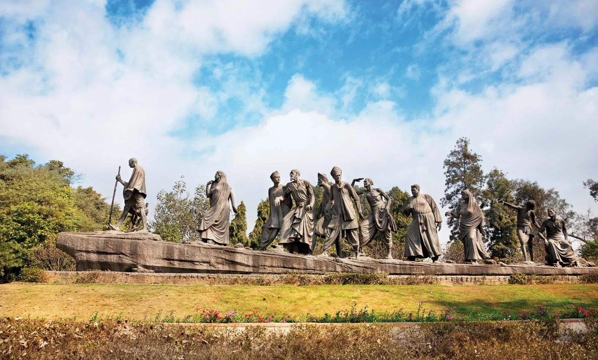
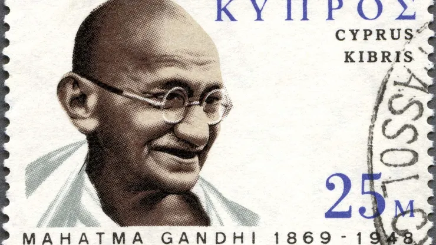

Mahatma Gandhiji
About The Legend
Basic Information:
- Born: 2 October 1869, Porbandar
- Spouse: Kasturba Gandhi (m. 1883–1944)
- Children: Harilal Gandhi, Devdas Gandhi, Manilal Gandhi, Ramdas Gandhi
- Assassinated: 30 January 1948, Birla House, New Delhi
- Full name: Mohandas Karamchand Gandhi
- Grandchildren: Gopalkrishna Gandhi, Arun Manilal Gandhi, MORE
Mahatma Gandhi, byname of Mohandas Karamchand Gandhi, (born Oct. 2, 1869, Porbandar, India—died Jan. 30, 1948, Delhi), Preeminent leader of Indian nationalism and prophet of nonviolence in the 20th century.
Gandhi grew up in a home steeped in religion, and he took for granted religious tolerance and the doctrine of ahimsa (noninjury to all living beings). He studied law in England from 1888 to 1891, and in 1893 he took a job with an Indian firm in South Africa. There he became an effective advocate for Indian rights.
In 1906 he first put into action satyagraha, his technique of nonviolent resistance. His success in South Africa gave him an international reputation, and in 1915 he returned to India and within a few years became the leader of a nationwide struggle for Indian home rule. By 1920 Gandhi commanded influence hitherto unattained by any political leader in India.
He refashioned the Indian National Congress into an effective political instrument of Indian nationalism and undertook major campaigns of nonviolent resistance in 1920–22, 1930–34 (including his momentous march to the sea to collect salt to protest a government monopoly), and 1940–42. In the 1930s he also campaigned to end discrimination against India’s lower-caste “untouchables” (Dalits; officially designated as Scheduled Castes) and concentrated on educating rural India and promoting cottage industry
India achieved dominion status in 1947, but the partition of the subcontinent into India and Pakistan was a great disappointment to Gandhi, who had long worked for Hindu-Muslim unity. In September 1947 he ended rioting in Calcutta (Kolkata) by fasting. Known as the Mahatma (“Great-Souled”), Gandhi had won the affection and loyalty of millions. In January 1948 he was shot and killed by a young Hindu fanatic.
Mahatma Gandhiji Achievements:
Mahatma Gandhi was one of the greatest national and civil rights leaders of the 20th century. He served as a lawyer, politician, and activist in the struggle for social justice and for India’s independence from British rule. Gandhi is internationally esteemed for his doctrine of nonviolent protest (satyagraha) to achieve political and social progress.
The Development of Satyagraha:
When he moved to South Africa in 1893, Gandhi quickly encountered racial discrimination. In a Durban court he was asked by the European magistrate to take off his turban; he refused and left the courtroom. A few days later, while traveling to Pretoria, he was thrown out of a first-class railway compartment and was later beaten up by the white driver of a stagecoach because he would not travel on the footboard to make room for a European passenger. He was also barred from hotels reserved “for Europeans only.” But something happened to Gandhi as he smarted under the insults heaped upon him. That journey from Durban to Pretoria was his moment of truth. Henceforth he would not accept injustice. He would defend his dignity as an Indian and as a man. Gandhi fought with mixed success against South Africa’s system of discrimination. He founded the Natal Indian Congress, and his writings exposed to the world the injustices suffered by Indians and others. In 1906 satyagraha (“devotion to truth”) was born as a technique of nonviolent resistance. By the time Gandhi returned to India in 1915, he had developed satyagraha into an effective tool in the fight for social justice.
Achieving India’s Independence:
By 1920 Gandhi was India’s dominant political figure, exerting a broad influence over the Indian population. The Indian National Congress (Congress Party) became a mass organization that Gandhi led in nonviolent actions. These included boycotts of British goods as well as British legislatures, courts, offices, and schools. In 1930 Gandhi launched the Salt March as a protest against a British tax on salt. The march was one of the most successful of Gandhi’s campaigns. Yet by 1934 he had become disillusioned with the infighting among Congress Party members. He turned to building the nation “from the bottom up.” By emphasizing rural education, social equality, and cottage industries, Gandhi believed India could become peaceful and self-sufficient.
The final struggle for Indian independence began in 1942. Gandhi demanded an immediate British withdrawal from India, known as the Quit India Movement. Over the next five years Gandhi struggled to help Muslim, Hindu, and British leaders negotiate Indian independence. He was unable to block the Mountbatten Plan, which divided the subcontinent into a Hindu-majority India and Muslim-majority East and West Pakistan. On August 15, 1947, India achieved its independence. Gandhi worked to stop the Muslim-Hindu riots that followed. On January 30, 1948, he was assassinated by a Hindu radical who was upset by Gandhi’s efforts to reconcile Hindus and Muslims.
Gandhi’s Legacy
Mahatma Gandhi is revered in India as the father of the country. He is remembered most for his nonviolent means of working for social justice, his acceptance of all faiths, and his ability to bring conflicting groups together. The model of satyagraha has inspired civil rights leaders, such as Martin Luther King, Jr., in many nations. Today Gandhi is one of the most universally known and revered figures in the world. In January 1997, nearly 50 years after his assassination, the ashes of Gandhi were spread in the Ganges River during a ceremony honoring his memory in Allahabad, India. The great-grandson of Gandhi, Tushar Gandhi, performed the act of dispersing the remains as thousands of onlookers chanted slogans in remembrance of the man who had succeeded, however briefly, in unifying a nation historically divided along religious and ethnic lines.
For more information,check out Mahatma-Gandhi on Wikipedia. [Developed by @ Ashwini Kori. ]